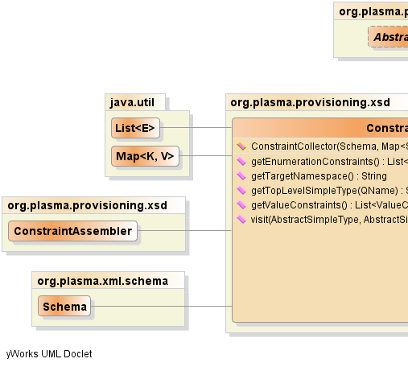
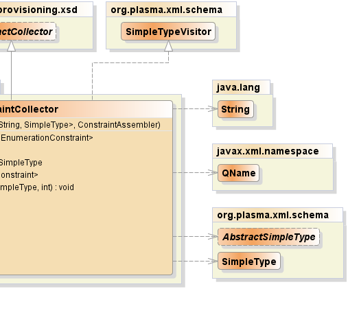

public class ConstraintCollector extends AbstractCollector implements SimpleTypeVisitor
SimpleTypeVisitor|  |  |
| Constructor and Description |
|---|
ConstraintCollector(Schema schema,
java.util.Map<java.lang.String,SimpleType> simpleTypeMap,
ConstraintAssembler assembler) |
| Modifier and Type | Method and Description |
|---|---|
java.util.List<EnumerationConstraint> |
getEnumerationConstraints() |
java.lang.String |
getTargetNamespace()
Returns the target namespace for a particular
schema instance.
|
SimpleType |
getTopLevelSimpleType(javax.xml.namespace.QName name)
Since the the type hierarchy traversal will encounter
qualified name references to many simple types, the
traversal logic requests a simple type from the visitor client.
|
java.util.List<ValueConstraint> |
getValueConstraints() |
void |
visit(AbstractSimpleType target,
AbstractSimpleType source,
int level)
The top event received when a simple type is encountered
in the course of traversal.
|
public ConstraintCollector(Schema schema, java.util.Map<java.lang.String,SimpleType> simpleTypeMap, ConstraintAssembler assembler)
public java.util.List<EnumerationConstraint> getEnumerationConstraints()
public java.util.List<ValueConstraint> getValueConstraints()
public void visit(AbstractSimpleType target, AbstractSimpleType source, int level)
SimpleTypeVisitorvisit in interface SimpleTypeVisitortarget - the target or "child" typesource - the source or "parent" typelevel - the traversal levelpublic SimpleType getTopLevelSimpleType(javax.xml.namespace.QName name)
SimpleTypeVisitorgetTopLevelSimpleType in interface SimpleTypeVisitorname - the qualified name of the simple typepublic java.lang.String getTargetNamespace()
SimpleTypeVisitorgetTargetNamespace in interface SimpleTypeVisitorPlasmaSDO™ and PlasmaQuery™ are trademarks of TerraMeta Software, Inc. Copyright © 2011 - All Rights Reserved.